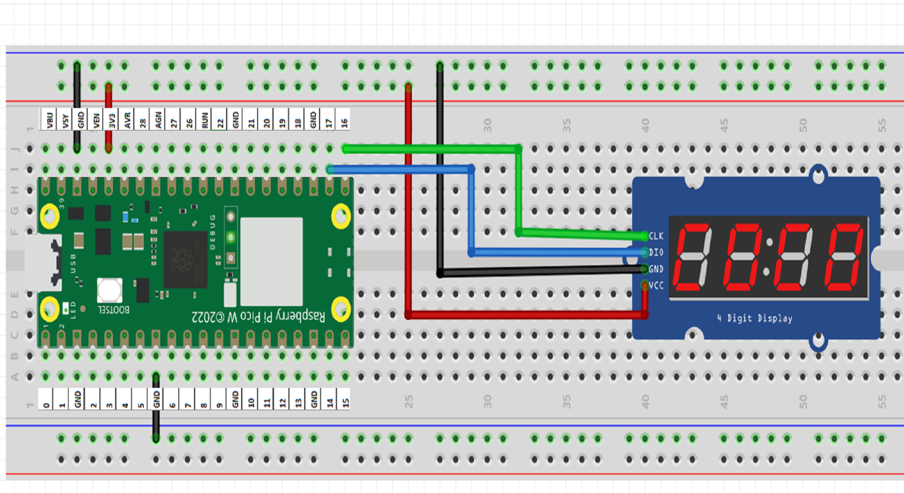

TM1637 Display Guide
Master the 4-digit 7-segment display with MicroPython and Raspberry Pi Pico W.
1. Download Library
You need the tm1637.py library to interface with the chip.
- Open Thonny IDE with your Pico W connected.
- Go to Tools > Manage Packages.
- Search for micropython-tm1637 and install it.
- Alternatively, create a new file named
tm1637.pyon your Pico and paste the library code manually.
2. Wiring Diagram

Wiring Diagram: tm1637_how_to_use.png
(Image not found in current directory)
Power Connections
TM1637 VCC
Pico 3V3 (Pin 36)
TM1637 GND
Pico GND (Pin 38)
Data Connections
TM1637 CLK
Pico GP16 (Pin 21)
TM1637 DIO
Pico GP17 (Pin 22)
Displaying Words
You can show basic words (limited by 7-segment logic) or set brightness levels.
import tm1637
from machine import Pin
# Setup Display (CLK=16, DIO=17)
display = tm1637.TM1637(clk=Pin(16), dio=Pin(17))
# Set Brightness (0-7)
display.brightness(3)
# Show "COOL"
display.show("COOL")